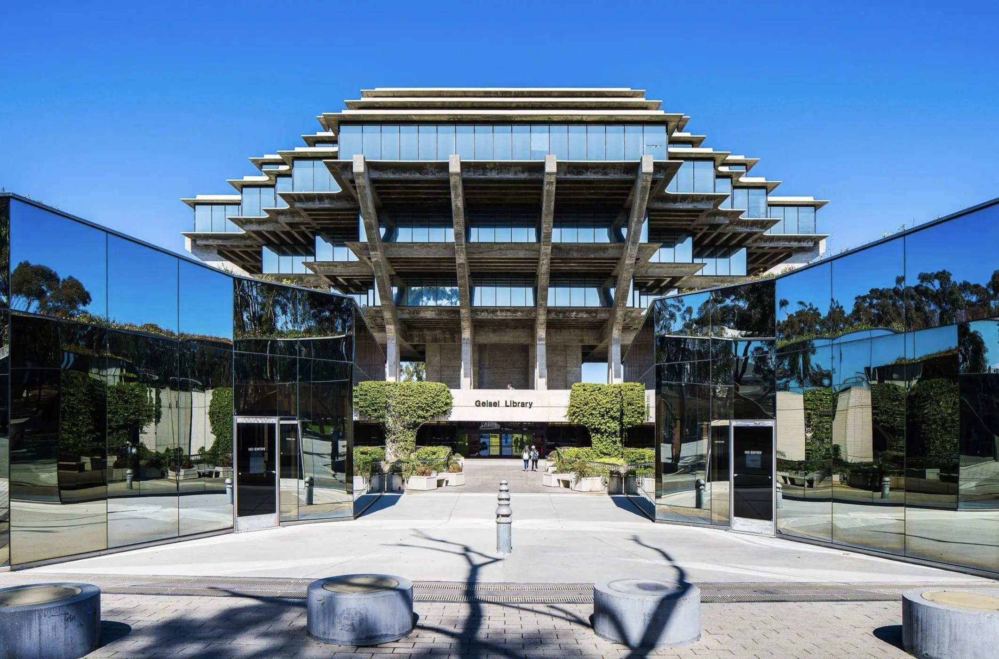

-
Mission Peak Hike, Fremont -
Introduction
Kai-Wen Cheng, also known as Kai, is a current 3rd year Electrical Engineering studying at the University of California, San Diego. He is originally from Taipei, Taiwan, and he moved to the US when he was 15 years old. Kai is passionate about Electronics, Software Design, Computer System, and numerous field of knowledge related to technology. On top of that, he also holds great interest in Macroeconomics.
Kai's hobby surrounds traveling, hiking, and reading. Kai also loves learning different languages. Currently, Kai speaks around 4 langauges (Cantonese, Mandarin, Taiwanese, English) fluently and knows about 2 other languages (Spanish and Japanese).
-
 UC San Diego's Giesel Library -
Education
-
University of California - San Deigo
-
Sept 2019 - Present
BSc in Electrical Engineering
BA in Economics
-
EF Academy New York
-
Sept 2016 - May 2019
Taipei Fuhsing Private School
-
Sept 2013 - June 2016
-
Gyudon Bowl -
Fun facts
-
Favorite Piece of Code
#include <stdio.h> int main() { for(;;){ printf("Hello World\n"); } } -
Favorite Food
Gyudon Bowl
-
Favorite Book
Range: Why Generalists Triumph in a Specialized World
-